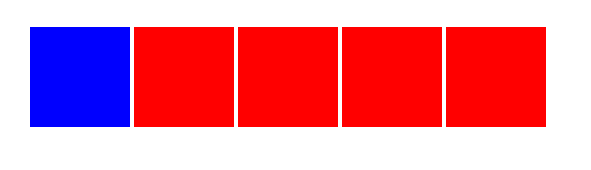
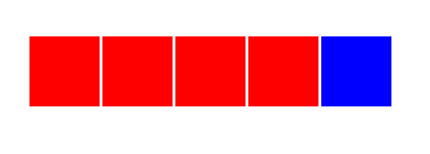
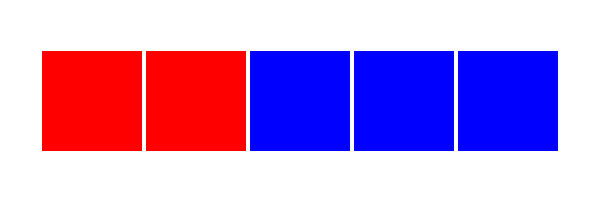
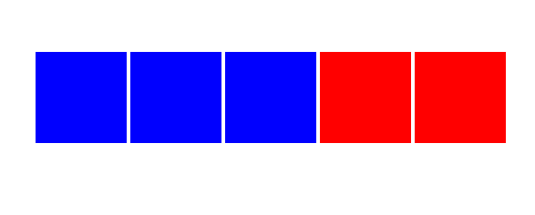

Рузукрасте элементы в синий цвет
1. Задача:
Разукрасить первый элемент

2. Задача:
Разукрасить последний элемент

3. Задача:
Разукрасить элементы начиная с 3й и все последующие

4. Задача:
Разукрасить первые 3 элемента
